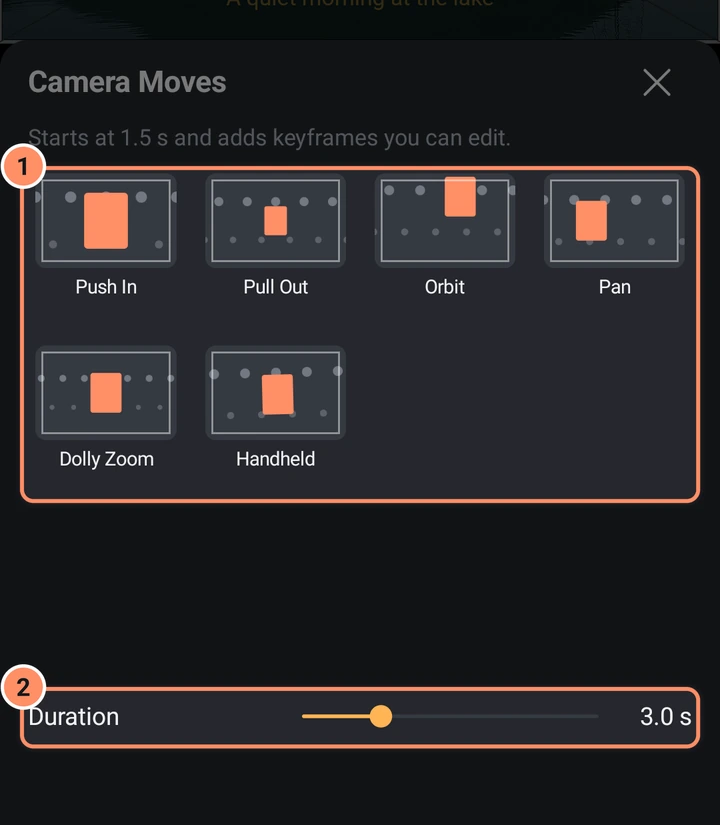

Capas de cámara y 3D
Vuela con una cámara virtual entre tus capas, inclina capas en 3D y añade modelos 3D.
Capas de cámara
Una capa de cámara hace que el proyecto sea tridimensional: las capas tienen una profundidad (Z) y la cámara decide qué se ve. Añade una desde Añadir, Objeto / recurso, Cámara. Dura todo el proyecto, usa perspectiva con un ángulo de visión de 60 grados y tiene el desenfoque de foco y la niebla desactivados.
La primera vez que añadas una cámara, aparecerá un consejo: «Para ver a través de la cámara, abre este panel y activa Vista de cámara.» El botón Vista de cámara está en la franja de vista previa (consulta La pantalla del editor). Con él activado, ves el proyecto a través de la cámara. Si no, las cámaras se muestran como marcos rectangulares oscuros en la vista previa.
Si hay varias cámaras, se usa la cámara que esté más arriba y activa en el cabezal de reproducción.
Mover la cámara
Selecciona la capa de cámara. En la vista previa, arrastra para desplazarla y pellizca para cambiar el ángulo de visión. Transformar tiene Mover, Tamaño y Girar; Tamaño cambia el ángulo de visión.
Opciones de cámara
Tres pestañas:
- Vista de cámara. Un diagrama del cono de visión, los botones Perspectiva y Ortográfica, un Ángulo de visión (de 0,1 a 179,9 grados) y un Zoom que sigue al ángulo.
- Desenfoque de foco. Un interruptor y luego Distancia de enfoque (con el plano de enfoque mostrado como «en Z ...»), Profundidad de campo y Intensidad del desenfoque.
- Niebla. Un interruptor, un Color y las distancias Cercano y Lejano.

Cada fila se puede animar con el botón de fotograma clave.
Movimientos de cámara
Movimientos de cámara en la cuadrícula de herramientas añade un movimiento listo para usar: Acercamiento, Alejamiento, Órbita, Panorámica, Dolly zoom o Cámara en mano. Cada mosaico tiene una vista previa animada. Ajusta la Duración entre 0,5 y 10 segundos. El movimiento empieza en el cabezal de reproducción y se acorta si la capa de cámara termina antes. Si eliges otro mosaico o cambias la duración, se actualiza, y el resultado son fotogramas clave normales que puedes editar.

Inclinar una capa en 3D
Cualquier capa se puede inclinar alrededor de los ejes X e Y. Abre Transformar y la pestaña Inclinar, que tiene ROTACIÓN X y ROTACIÓN Y en grados. Si arrastras en la vista previa mientras Girar o Inclinar está abierto, también inclinas la capa.
Cuando una capa está inclinada, tiene animación de inclinación, es un modelo 3D o tiene un efecto 3D, la pestaña Girar se convierte en un panel táctil 3D («Arrastra aquí para girar en 3D») con los campos X, Y y ROTACIÓN Z. Con un dedo inclinas la capa y con dos la giras. Restablecer rotación 3D en el menú Más lo restablece.
Efectos 3D
Los efectos de la categoría 3D convierten una capa en un sólido: Cubo, Caja, Caja hueca, Cilindro, Elipsoide, Toro, Pirámide, Octaedro, Prisma hexagonal, Prisma estrellado, Poliedro estrellado, Corazón, Cruz de tres ejes, Extrusión de ráster, Voltear capa, Esferizar y Túnel. Cuando hay uno activo, los controles Girar e Inclinar cambian la rotación de ese efecto. Consulta la biblioteca de efectos.
Modelos 3D
Añadir, Objeto / recurso, Modelo 3D carga un archivo .obj, .glb o .gltf. Si el modelo tiene archivos de material y de imagen, selecciónalos junto con el modelo. Los archivos pueden sumar hasta 256 MB, y un modelo con más de 50.000 triángulos se muestra de forma simplificada (la app te lo indica).
Opciones del modelo tiene Tamaño, Rotación automática, Ángulo de luz, Luz ambiental e Intensidad de luz, todos se pueden animar. Un modelo también tiene Transformar (incluida la rotación 3D), Opacidad, Efectos y Preajustes.